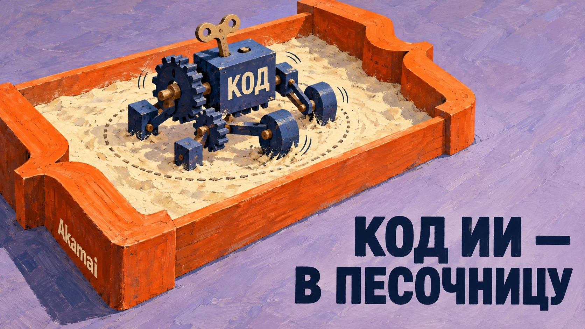

ИИ-агент получает доступ к корпоративному коду, паролям и внутренним системам. Теперь компания может сама управлять всей инфраструктурой, в которой он работает.
Anthropic 12 ноября открыла закрытое бета-тестирование Self-hosted Claude Managed Agents. Новая версия платформы позволяет организациям запускать сервис управления ИИ-агентами на собственных серверах или в выбранном облаке.
Раньше Anthropic сама управляла серверной частью Managed Agents. Компании могли размещать у себя изолированные рабочие среды, в которых агенты выполняли команды, но управление сессиями оставалось на стороне разработчика Claude.
Теперь заказчику передают и эту часть системы.
У компании могут находиться сервер управления агентами, база данных, история выполненных заданий, ключи доступа и рабочие контейнеры, в которых ИИ запускает программы и обрабатывает файлы.
Сами нейросети Claude продолжают работать через внешнего поставщика. Можно использовать инфраструктуру Anthropic, Amazon Bedrock, Google Cloud, Microsoft Foundry или собственный шлюз для подключения к модели.
Зачем компаниям свой сервер для Claude?
Например, ИИ-агенту поручили исправлять ошибки в корпоративном приложении. Ему нужен доступ к исходному коду, внутренним инструментам и журналам работы.
Для таких задач уже используют изолированные среды исполнения, которые ограничивают действия ИИ внутри отдельного окружения.

Self-hosted Managed Agents позволяет компании самостоятельно управлять ещё и сервером, который создаёт задания, хранит историю работы и организует взаимодействие агентов с инструментами.
Anthropic предусмотрела разграничение полномочий и подключение собственного хранилища секретов. Историю действий можно передавать в корпоративные системы мониторинга.
При этом запросы к самой модели, включая содержимое разговора и результаты работы инструментов, отправляются выбранному поставщику вычислений. Хранение истории на своём сервере не исключает такой передачи.
Установить можно, скачать пока не всем
Для пробного запуска Anthropic предлагает Docker Compose. На одном компьютере разворачиваются сервер, база PostgreSQL и рабочие контейнеры агентов.
Для производственной эксплуатации компания рекомендует Kubernetes.
Самостоятельная установка требует настройки безопасности, обновлений и постоянной работы обслуживающих процессов. Часть возможностей облачной платформы здесь пока отсутствует, включая встроенное расписание запуска агентов и вебхуки.
Доступ к установочному пакету предоставляют по запросу через команду Anthropic. Публичной загрузки для всех желающих пока нет.
Self-hosted Claude Managed Agents распространяется по отдельному лицензионному соглашению для серверного программного обеспечения.